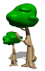

Para motivar aún más nuestra participación, en la Oficina Nacional han dispuesto un Contador en su sitio Web, donde se llevará un registro de todos los árboles sembrados por los Scouts en el País.
Participar es muy fácil sólo debes enviar un correo electrónico a la Dirección Nacional de Comunicaciones (comunicaciones@scoutsvenezuela.org.ve), indicando la cantidad de árboles sembrados, y adjuntando algunas fotos de la actividad.
A continuación un ejemplo del mensaje a enviar. Para esto utilizaremos un hipotético Grupo Scout San Luis del Distrito La Sierra, Región Falcón.
Para: comunicaciones@scoutsvenezuela.org.ve
Asunto: GS San Luis / La Sierra / Falcón: Siembra de árboles
Estimados Hermanos Scouts.
Reciban ante todo un amistoso apretón de mano izquierda.
Adjunto al correo algunas fotografías de una siembra de árboles realizada por los muchachos de nuestro grupo, el pasado 15/06/2013, en el Parque Nacional José Leonardo Chirino. En total se plantaron 12 arbolitos.
Esperamos sean agregados a la cuenta correspondiente a los 100.000 árboles por Venezuela.
Sin más por el momento, atentamente
Scouter Rodrigo Díaz de Vivar
Jefe de Grupo
SLPS
Asunto: GS San Luis / La Sierra / Falcón: Siembra de árboles
Estimados Hermanos Scouts.
Reciban ante todo un amistoso apretón de mano izquierda.
Adjunto al correo algunas fotografías de una siembra de árboles realizada por los muchachos de nuestro grupo, el pasado 15/06/2013, en el Parque Nacional José Leonardo Chirino. En total se plantaron 12 arbolitos.
Esperamos sean agregados a la cuenta correspondiente a los 100.000 árboles por Venezuela.
Sin más por el momento, atentamente
Scouter Rodrigo Díaz de Vivar
Jefe de Grupo
SLPS

 2 En el centro abre un hueco tan ancho y profundo como la raíz de la planta.
2 En el centro abre un hueco tan ancho y profundo como la raíz de la planta. 4 Ponla en el hueco al ras de suelo.
4 Ponla en el hueco al ras de suelo.  5 Cubre la raíz de la planta con tierra.
5 Cubre la raíz de la planta con tierra.  6 Compacta la tierra con las manos, no debe quedar ni muy floja, ni muy apretada.
6 Compacta la tierra con las manos, no debe quedar ni muy floja, ni muy apretada.  7 Haz un muro o canaleta alrededor de la planta, para facilitar la retención de agua. Riega abundantemente.
7 Haz un muro o canaleta alrededor de la planta, para facilitar la retención de agua. Riega abundantemente.